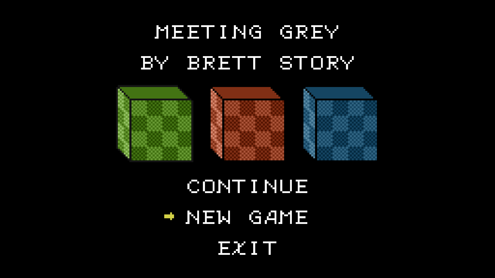
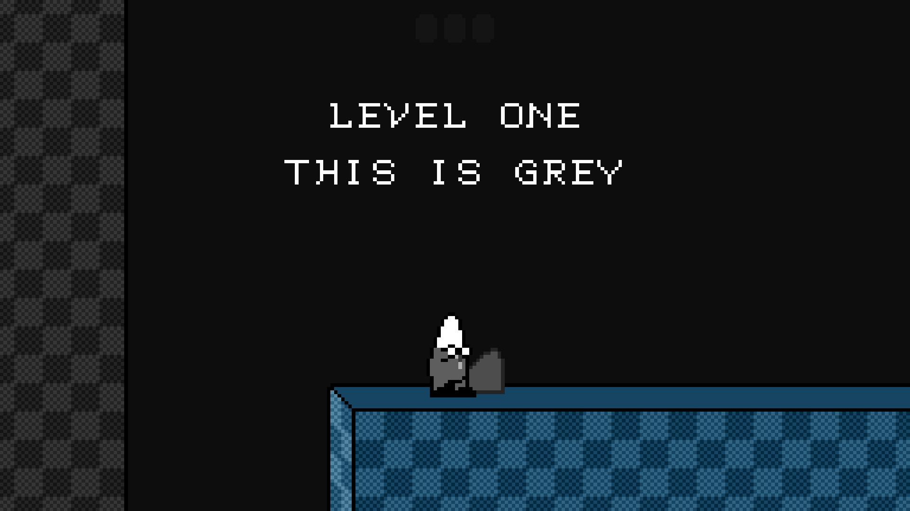
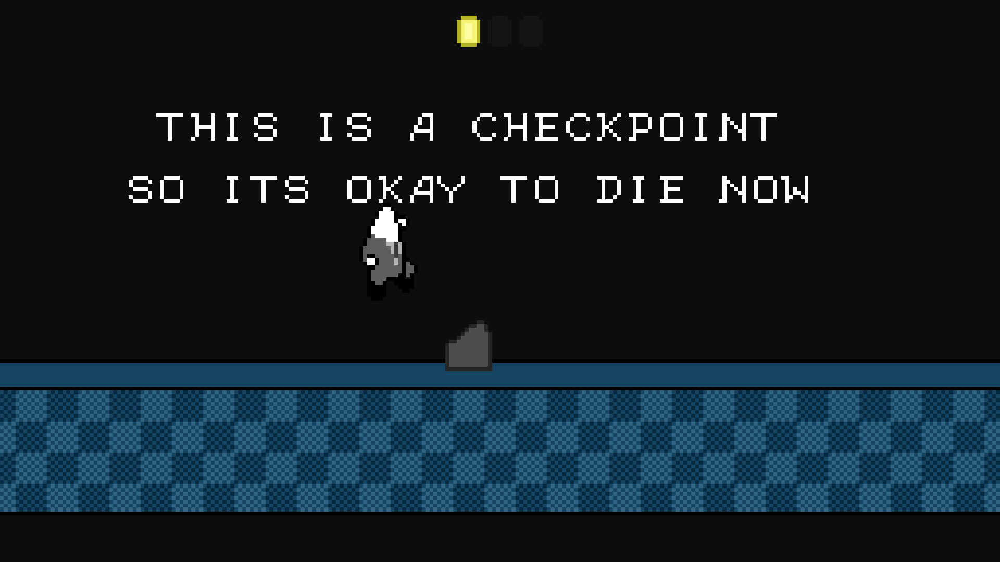
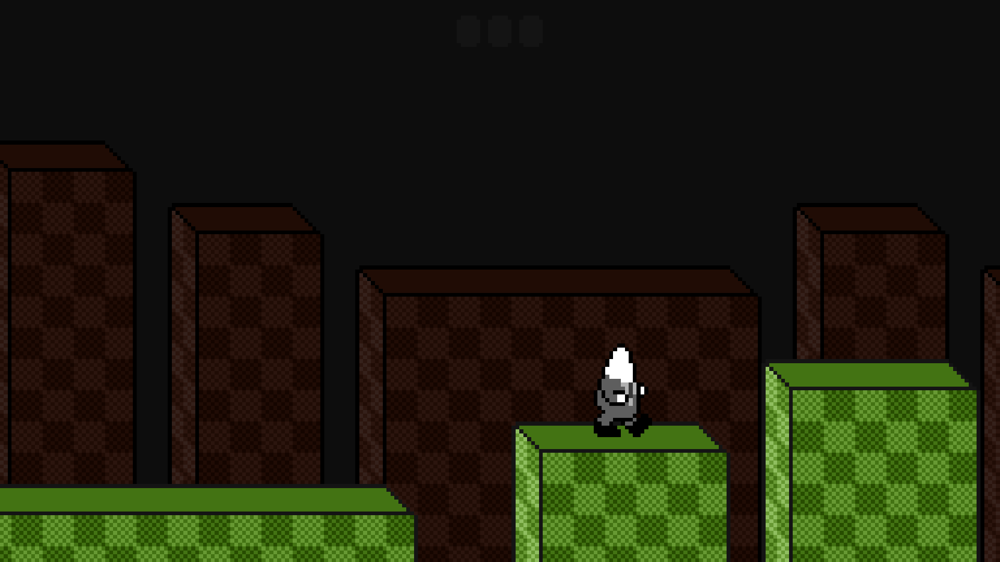
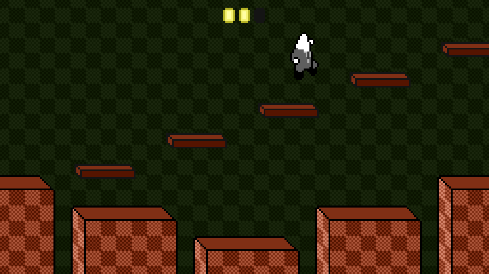
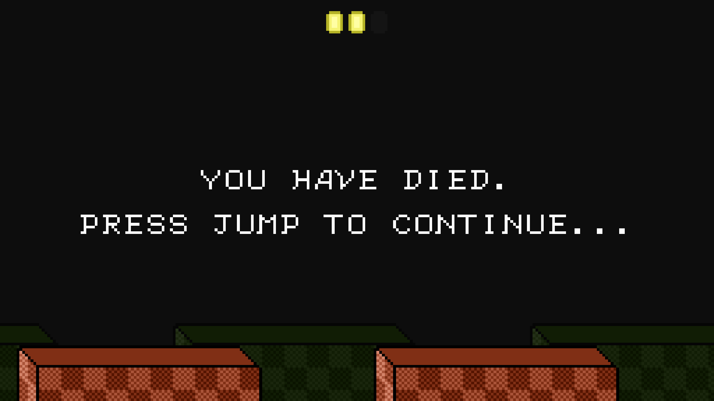
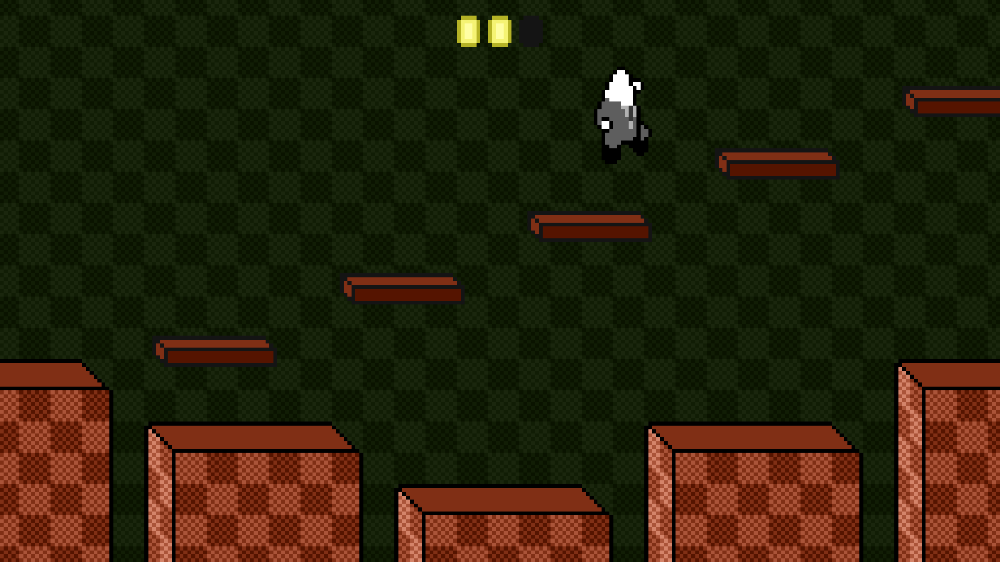
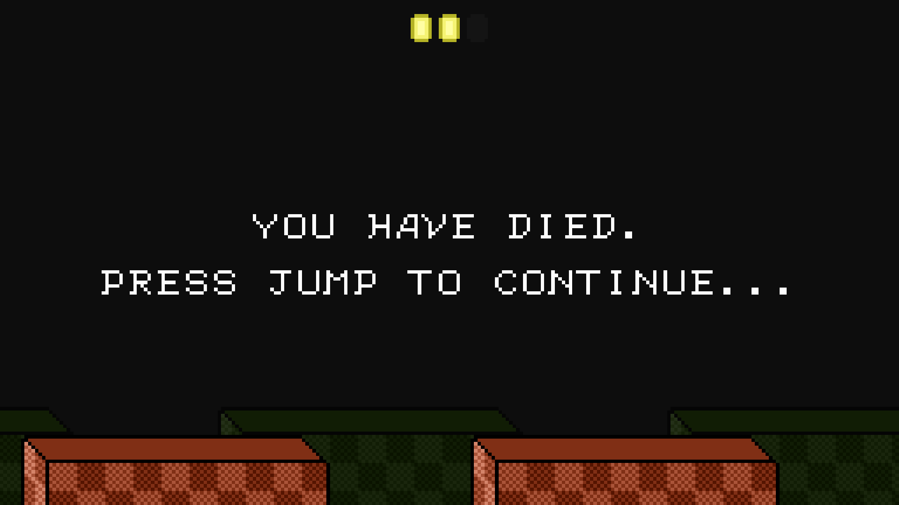

Packages
- Windows 32-bit
- Windows 64-bit
- Linux 32-bit
- Linux 64-bit
- Linux Universal
- Mac 32-bit
- Mac 64-bit
- Mac Universal
Description
This project was made in 48 hours for Bacon Game Jam 09. Meeting Grey is a simplistic 2D platformer that allows swapping between two different depths to progress in the level. More information about Bacon Game Jam 09 can be found here.
Screenshots
   
 


